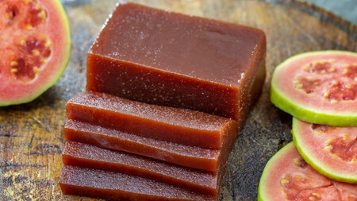
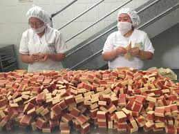
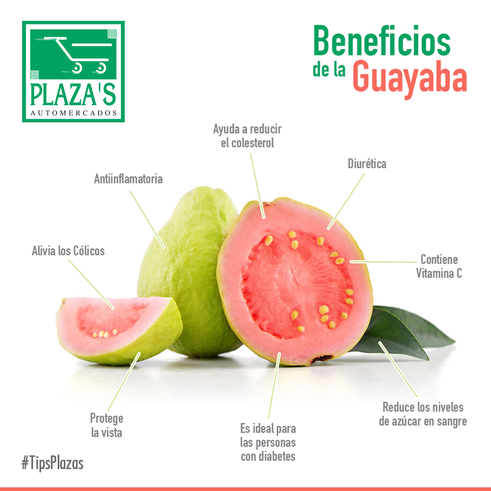
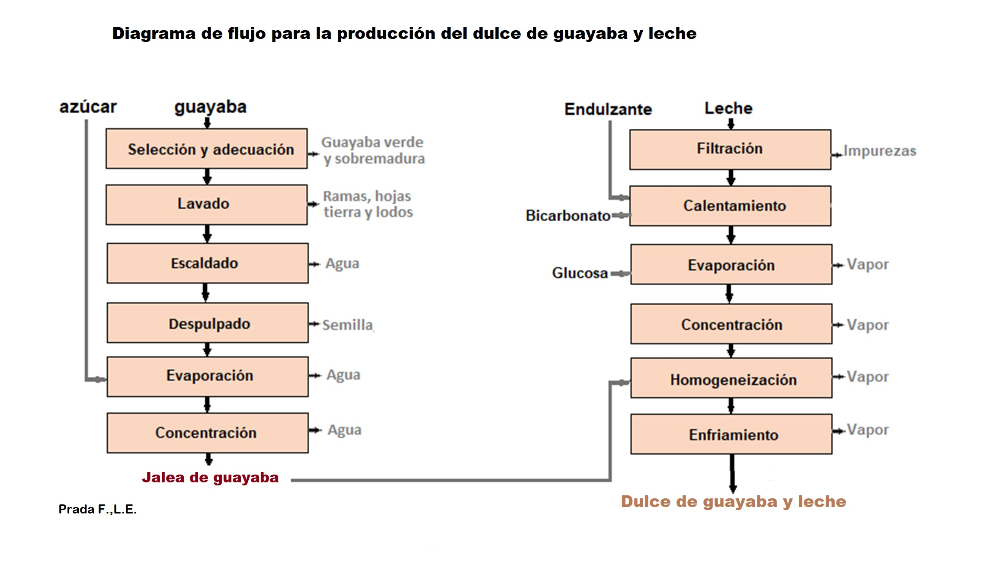

Los dulces de guayaba son productos típicos en muchos países de América Latina, especialmente en Colombia, Venezuela, y México. Estos dulces son una verdadera delicia elaborada con la pulpa de la guayaba, una fruta tropical de sabor dulce y ligeramente ácido. Su textura varía según la preparación, pudiendo ser suave como una jalea o más densa como una barra sólida.
¿Qué son los dulces de guayaba?
Historia de los dulces de guayaba
Los dulces de guayaba tienen una rica historia que data de la época precolombina, cuando los pueblos indígenas ya utilizaban esta fruta para crear diferentes conservas. Con la llegada de los españoles, las técnicas de confitería se refinaron, dando lugar a los dulces que hoy conocemos. A lo largo de los años, los dulces de guayaba se han convertido en un símbolo de la gastronomía latinoamericana.
Tipos de dulces de guayaba
Existen varios tipos de dulces de guayaba, algunos de los más populares incluyen:
- Bocadillo de Guayaba: Una barra firme y dulce que suele acompañarse de queso.
- Mermelada de Guayaba: Suave y fácil de untar, perfecta para panes o galletas.
- Jalea de Guayaba: Similar a la mermelada pero con una textura más firme y gelatinosa.
- Dulce en conserva: Trozos de guayaba cocidos en almíbar, ideales para postres o como acompañamiento de otros platillos.
Beneficios para la salud
La guayaba es una fruta muy rica en nutrientes, y los dulces que se preparan con ella, si se consumen con moderación, pueden ser una forma deliciosa de disfrutar de sus beneficios. Algunos de estos beneficios incluyen:
- Vitamina C: La guayaba es una excelente fuente de vitamina C, que ayuda a fortalecer el sistema inmunológico.
- Fibra: Ayuda en la digestión y promueve la salud intestinal.
- Antioxidantes: Protegen las células del daño causado por los radicales libres. 
Proceso de elaboración
El proceso de elaboración de los dulces de guayaba puede variar según la receta, pero generalmente sigue los siguientes pasos:
- Se seleccionan las guayabas maduras y se pelan.
- La pulpa se cocina junto con azúcar, removiendo constantemente para evitar que se queme.
- Cuando la mezcla alcanza una consistencia espesa, se retira del fuego y se vierte en moldes o frascos.
- Dependiendo del tipo de dulce, se deja enfriar hasta obtener la textura deseada. 